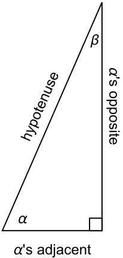

Right triangle trigonometry involves the function of an angle computed as ratios of sides from a right triangle. The video summarizes the content of this section.
A right triangle is a triangle containing one \(90^\circ\) angle. The remaining two angles must be acute, i.e. they are positive angles less than \(90^\circ\text{.}\) I’ve drawn a right triangle below with the acute angles labeled \(\alpha\) (“alpha”) and \(\beta\) (“beta”). We call \(\alpha\) and \(\beta\) complementary angles as they sum to \(90^\circ\text{.}\) The side opposite the right angle is always called the hypotenuse. The remaining sides are labeled adjacent and opposite relative to the acute angle being considered. Carefully read the labels on the figures below.
Figure8.14.Sides labeled from \(\alpha\)’s perspective.
Figure8.15.Sides labeled from \(\beta\)’s perspective.
There are six trigonometric functions that input an acute angle \(0 \lt \alpha \lt 90^\circ\) and output a particular ratio of two sides of the triangle.
Definition8.16.The Six Trigonometric Ratios.
Suppose \(0 \lt \alpha \lt 90^\circ\) is an acute angle in a right triangle. The six trigonometric functions of \(\alpha\) are:
Sine of \(\alpha\) is defined as \(\sin(\alpha) = \frac{\text{opposite}}{\text{hypotenuse}}.\)
Cosine of \(\alpha\) is defined as \(\cos(\alpha) = \frac{\text{adjacent}}{\text{hypotenuse}}.\)
Tangent of \(\alpha\) is defined as \(\tan(\alpha) = \frac{\text{opposite}}{\text{adjacent}}.\)
Cosecant of \(\alpha\) is defined as \(\csc(\alpha) = \frac{\text{hypotenuse}}{\text{opposite}}.\)
Secant of \(\alpha\) is defined as \(\sec(\alpha) = \frac{\text{hypotenuse}}{\text{adjacent}}.\)
Cotangent of \(\alpha\) is defined as \(\cot(\alpha) = \frac{\text{adjacent}}{\text{opposite}}.\)
Example8.17.Finding Trignometric Function Values.
Consider the right triangle below with two sides labeled.
We are missing one of the sides which we may determine from the Pythagorean theorem:
Observe the order I’ve written them in so that they compare with those for \(\alpha\text{.}\) For instance, \(\cos(\beta) = \sin(\alpha)\text{.}\)
Finally, notice that the specific dimensions of the triangle I use to compute the trigonometric ratios is irrelevant: any right trianlge with these angles will result in the same ratios. For instance, if I draw \(\alpha\) in a right triangle with half the size
the side lengths are all scaled by \(1/2\) and the ratios remain unchanged.
Some of our observations from the previous examples are summarized below as trigonometric identities. An identity is an equation relating trigonometric expressions that are valid for all angles in the domain of the expressions.
Theorem8.18.Reciprocal, Ratio, and Cofunction Identities.
Suppose \(\alpha\) is an acute angle. The reciprocal identites state:
Example8.19.Finding Trignometric Function Values Given a Ratio.
Suppose \(\theta\) is an acute angle and \(\csc(\theta) = 3\text{.}\) Find the remaining trigonometric function values of \(\theta\text{.}\)
Solution.
We know that \(\csc(\theta) = 3\) and from the reciprocal identities, \(\sin(\theta) = \frac{1}{3}\text{.}\) We can assign any value to the opposite side and the hypotenuse provided their ratio as above is \(1/3\text{.}\) Taking the opposite to be \(1\) and the hypotenuse to be \(3\) will suffice. The adjacent side is then
from which we may compute \(\cos(\theta) = \frac{\sqrt{8}}{3}\) and the reciprocal \(\sec(\theta) = \frac{3}{\sqrt{8}} = \frac{3\sqrt{8}}{8}\text{.}\) Finally, from the ratio identities
A standard scientific calculator can estimate the trigonometric function values of an angle. You need to make sure you calculator is in degree or radian mode depending on the context.
Example8.20.Using Technology.
A person stands 100 feet from a flagpole and measures an angle of elevation between the ground and the top of the flagpole to be \(37^\circ\text{.}\) Find the height of the flagpole.
Solution.
We have
\begin{equation*}
\tan(37^\circ) = \frac{\text{(height of pole)}}{100 \, \rm feet}
\end{equation*}